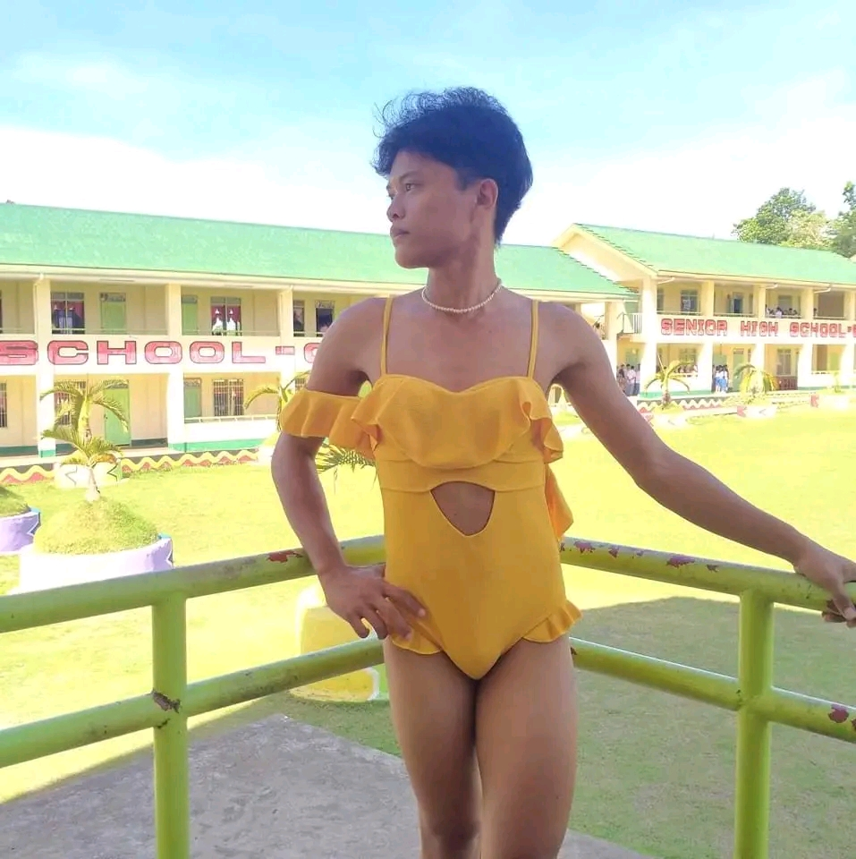

CARL LAGOY
Camanga Tukuran, Zamboanga Del Sur
09632316543
CAREER OBJECTIVES
To utilize my knowledge and skills in this field and contribute to the success of the team.
PERSONAL BACKGROUND
- Birthday: October 10, 2006
- Birthplace: Tukuran Center
- Address: Camanga, Tukuran, Zamboanga Del Sur
- Mother's Name: Norellie C. Lagoy
- Age: 18
- Height: 5'5"
EDUCATIONAL BACKGROUND
- Elementary: Tukuran Sped Center
- Secondary: Tukuran Technical Vocational High School
- Tertiary: TTVHS - Main Campus
SKILLS
- Computer Programming
- Electrical Wiring
- Welding
MY FAVORITE MUSIC
Marilag by Dionela